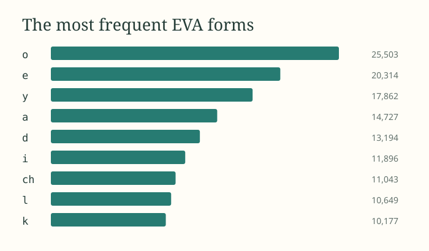
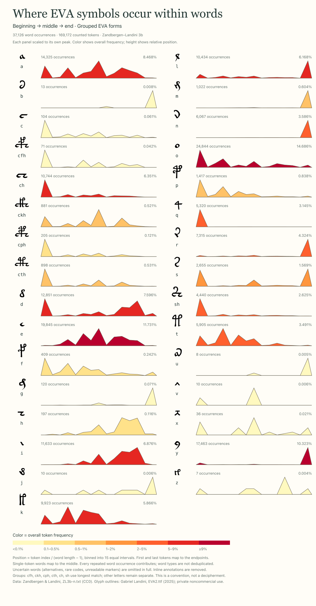
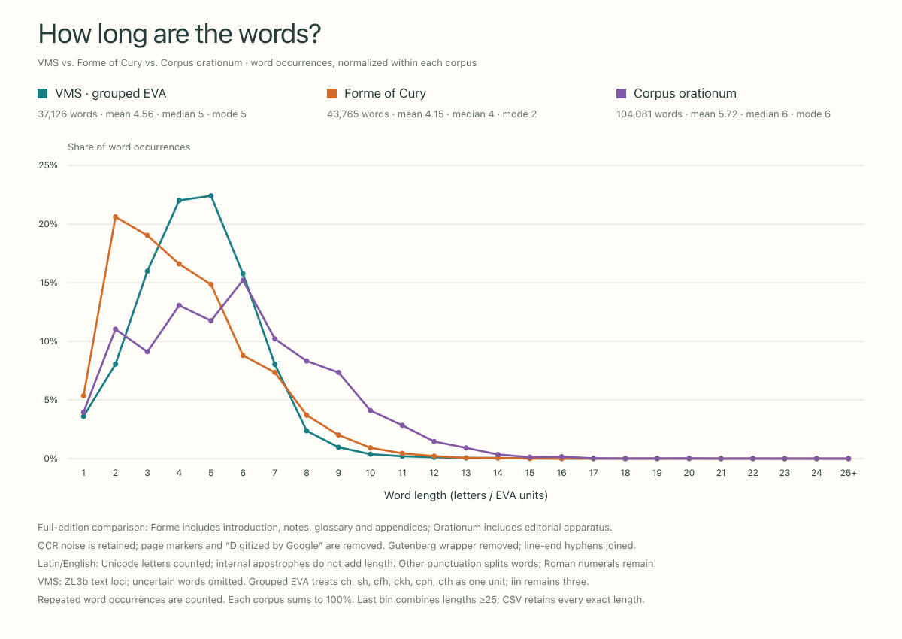

01 / How often does each sign occur?
EVA symbol frequencies
Compare glyph counts, sort the alphabet, and switch between individual EVA letters and grouped forms.
Explore chart →Download standalone HTML

02 / Beginning, middle, or end?
Where symbols occur within words
Small area charts reveal each sign’s positional profile. Compare grouped forms or individual EVA letters on independent or shared scales.
Explore chart →Download standalone HTML

03 / VMS, Forme of Cury, and Orationum
Word lengths across corpora
Compare normalized word-length distributions, switch between lines and histograms, and inspect the effect of EVA segmentation.
Explore chart →Download standalone HTML
A page to read, not a chart to decode
The manuscript,
set in type.
fachys ykal ar ataiin
shol shory cthres y kor sholdy
Reading edition / folio by folio
Read the manuscript
A continuous glyph edition with adjustable type, optional EVA labels, and links from each word to its folio in Voynichese.
Open the reader →Read the patterns with their assumptions.
EVA is a transliteration system, not a decipherment. Grouping signs changes the units being counted. Each chart explains its segmentation and cleaning rules; counts can differ between charts when uncertain words are excluded differently.
The VMS charts use Zandbergen–Landini 3b. The word-length comparison uses the supplied full editions of Forme of Cury and Corpus orationum, including editorial material and OCR noise. These charts are exploratory references.